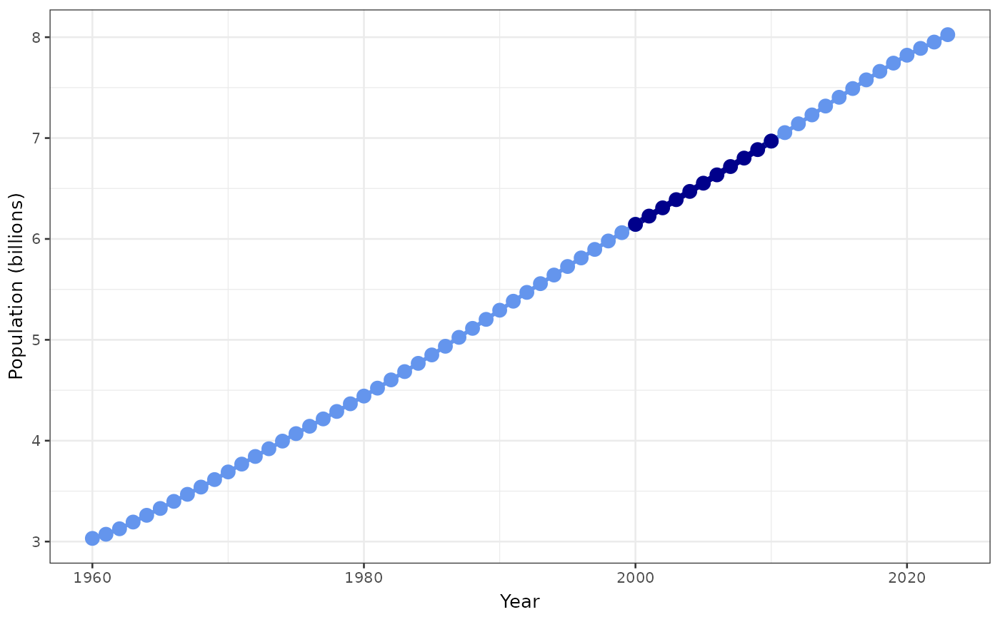
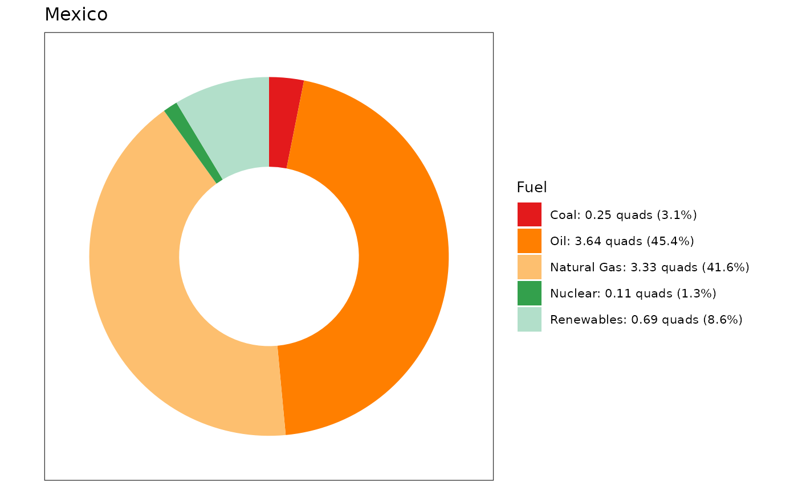

Getting Started with the kayadata Package
Jonathan Gilligan
2019-12-21
Source:vignettes/kayadata.Rmd
kayadata.Rmdkayadata
This package loads Kaya-identity data, synthesized from several sources.
To install and load the package, first install either the
pacman or devtools package from CRAN:
install.packages("devtools")
devtools::install_github("jonathan-g/kayadata")
library(kayadata)or
install.packages("pacman")
library(pacman)
p_load_gh("jonathan-g/kayadata")Once you’ve installed it, then you just need to use the command
library(kayadata) to load the package.
Some of the functions the package provides are:
-
kaya_region_list(): Get a list of available countries and regions. -
get_kaya_data(): Get data for a specific country. Example:
mexico_data = get_kaya_data("Mexico")
mexico_data %>% filter(year >= 1965) %>%
select(region:ef) %>%
head()## # A tibble: 6 × 10
## region year P G E F g e f ef
## <ord> <int> <dbl> <dbl> <dbl> <dbl> <dbl> <dbl> <dbl> <dbl>
## 1 Mexico 2023 0.128 1.33 8.01 490. 10.3 6.04 61.1 369.
## 2 Mexico 2022 0.128 1.29 7.76 469. 10.1 6.04 60.5 365.
## 3 Mexico 2021 0.127 1.24 7.42 443. 9.76 6.01 59.6 358.
## 4 Mexico 2020 0.126 1.17 6.97 413. 9.28 5.96 59.3 354.
## 5 Mexico 2019 0.125 1.28 7.65 481. 10.2 5.98 62.8 376.
## 6 Mexico 2018 0.124 1.28 7.73 489. 10.3 6.03 63.3 381.-
project_top_down(): Project future population, GDP, energy use, and emissions. Example:
mexico_2050 = project_top_down("Mexico", 2050)
mexico_2050## # A tibble: 1 × 10
## region year P G g E F e f ef
## <chr> <dbl> <dbl> <dbl> <dbl> <dbl> <dbl> <dbl> <dbl> <dbl>
## 1 Mexico 2050 0.154 2.51 16.3 10.9 609. 4.36 55.7 243.-
plot_kaya: Plot trends in Kaya variables for a given region or country. Example:
us_kaya = get_kaya_data("United States")
plot_kaya(us_kaya, "ef", y_lab = "Carbon intensity of economy",
start_year = 2000, stop_year = 2010, log_scale = TRUE,
trend_line = TRUE, font_size = 10)
world_kaya = get_kaya_data("World")
plot_kaya(world_kaya, "P", start_year = 2000, stop_year = 2010,
log_scale = FALSE, trend_line = FALSE, font_size = 10)
* get_fuel_mix: Get the fuel mix (coal, gas, oil, nuclear,
and renewables) for a region or country. Example:
mexico_mix = get_fuel_mix("Mexico")
mexico_mix## # A tibble: 5 × 5
## region year fuel quads frac
## <chr> <int> <ord> <dbl> <dbl>
## 1 Mexico 2023 Oil 3.64 0.454
## 2 Mexico 2023 Natural Gas 3.33 0.416
## 3 Mexico 2023 Coal 0.250 0.0312
## 4 Mexico 2023 Nuclear 0.105 0.0131
## 5 Mexico 2023 Renewables 0.690 0.0861-
plot_fuel_mix: Plot the fuel mix in a donut chart
plot_fuel_mix(mexico_mix, font_size = 10)
After you install the package, you can get more help inside RStudio
by typing help(package="kayadata") in the R console
window.